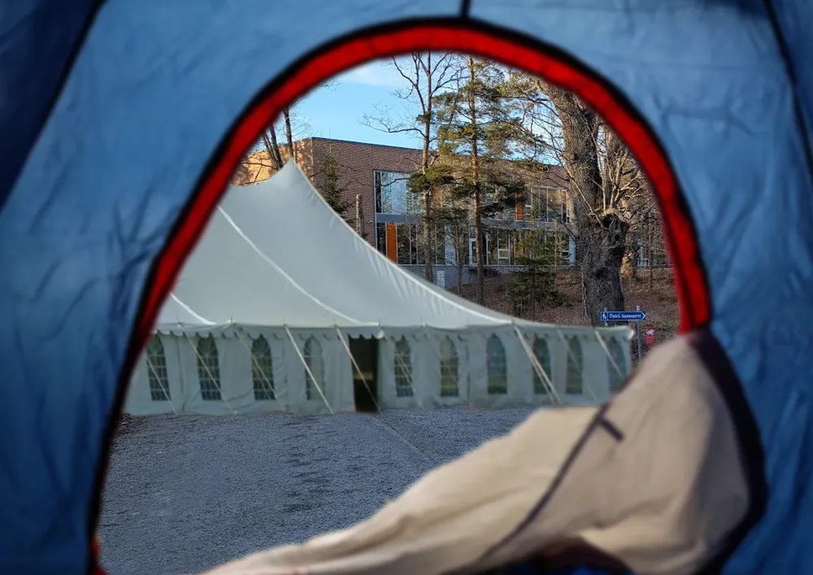

Insändare

Kan man inte va locked-in får man vara locked-out!
Som många vet har Östra lökens (och elevkårens) Lock in™ 2026 ställts in av rolighetspolisen då det ska installeras solpaneler. Jag, som många andra, är väldigt besviken över detta. Det är därför jag föreslår en ny plan! Jag föreslår att vi stället har en Lock out™ 2026 där alla istället tältar på gräsplätterna kring skolan. Samma datum samma tid. Be there or be square.